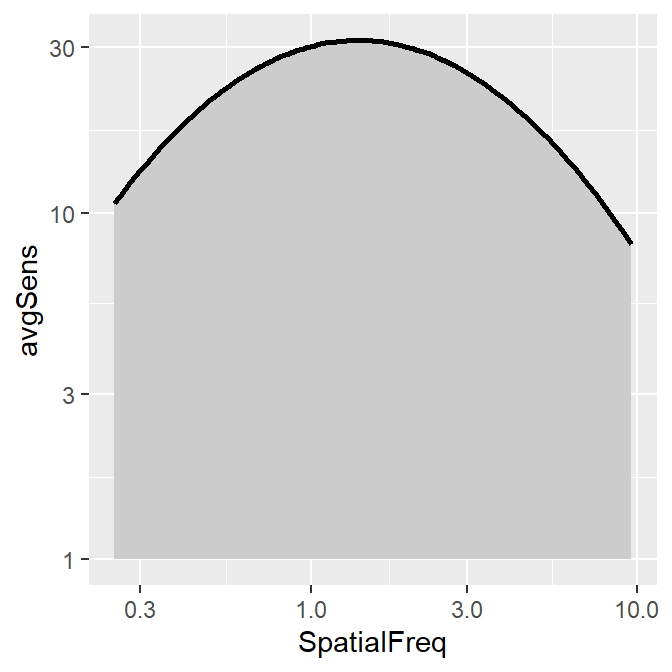
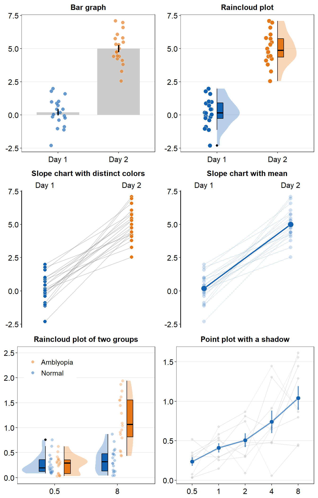
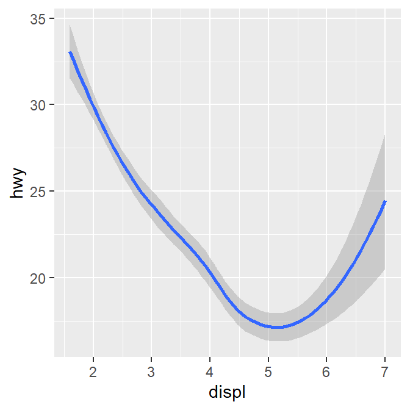

Chapter 2 Basics of ggplot2 and Correlation Plot
Load these packages by typing the codes below.
library(tidyverse) # it has ggplot2 package
library(cowplot) # it allows you to save figures in .png file
library(smplot)2.1 Uploading data
Sample data: mpg
- I will be using an example from the book R for Data Science (https://r4ds.had.co.nz/data-visualisation.html).
- Question: Do cars with large engines use up more fuel than the those with small ones?
- Let’s open mpg, which is a data frame stored in the ggplot2 package.
- mpg contains data about cars in the US. You can type
?mpgfor more information.- displ: the size of the car’s engine in liters
- hwy: fuel efficiency. If it’s high, then the car uses less fuel per distance.
mpg## # A tibble: 234 x 11
## manufacturer model displ year cyl trans drv cty hwy fl
## <chr> <chr> <dbl> <int> <int> <chr> <chr> <int> <int> <chr>
## 1 audi a4 1.8 1999 4 auto~ f 18 29 p
## 2 audi a4 1.8 1999 4 manu~ f 21 29 p
## 3 audi a4 2 2008 4 manu~ f 20 31 p
## 4 audi a4 2 2008 4 auto~ f 21 30 p
## 5 audi a4 2.8 1999 6 auto~ f 16 26 p
## 6 audi a4 2.8 1999 6 manu~ f 18 26 p
## 7 audi a4 3.1 2008 6 auto~ f 18 27 p
## 8 audi a4 quattro 1.8 1999 4 manu~ 4 18 26 p
## 9 audi a4 quattro 1.8 1999 4 auto~ 4 16 25 p
## 10 audi a4 quattro 2 2008 4 manu~ 4 20 28 p
## # ... with 224 more rows, and 1 more variable: class <chr>- Notice that some columns and rows are not shown. You can type
View(mpg)to see the entire data frame. - Each row is an unique observation.
- Each column is an unique variable/condition.
View(mpg)2.2 Basics of ggplot2
Let’s make some graphs
- Question: Do cars with large engines use up more fuel than the those with small ones?
- To answer our question, we need to plot mpg data. The x-axis should be displ, the y-axis should be hwy.
ggplot(data = mpg) +
geom_point(mapping = aes(x = displ, y = hwy))
- We find that a smaller car has a higher efficiency and that a larger car has a lower efficiency. In other words, we see a negative relationship.
How ggplot works
- When you are making a graph with ggplot2, always begin by typing the function
ggplot().- The data you want to plot is the first argument here. Ex.
ggplot(data = mpg).
- The data you want to plot is the first argument here. Ex.
- However,
ggplot(data = mpg)alone does not create a graph. You will need add (by typing +) more layers, such asgeom_point().geom_point()adds points to your graphs. You will need to specify (or map) x- and y-axes in theaes()function, which means aesthetics. This process is called mapping.- As you might expect, there are other geom functions, such as
geom_bar(),geom_boxplot(),geom_errorbar(). They plot bar graphs, boxplots and error bars, respectively.
- Here is the template for using ggplot2 (copied from R for Data Science).
ggplot(data = <DATA>) +
<GEOM_FUNCTION>(mapping = aes(<MAPPINGS>))Different color of points for each unique group
- You can apply different colors by the class of each car (each car = each row of the mpg data frame).
- Include
classvariable in theaes()function. - This maps the third variable
classinto your graph. aes()means aesthetic (ex. color, shape, etc).
- Include
ggplot(data = mpg) +
geom_point(mapping = aes(x = displ, y = hwy, color = class))
- You can also set different shapes for each group of the data.
ggplot(data = mpg) +
geom_point(mapping = aes(x = displ, y = hwy, shape = class))
- Or size or transparency (not recommended). But you get the idea. Using
aes()in a geom function (ex.geom_point()), you can label different group of points.
# different levels of transparency (alpha) for each group
ggplot(data = mpg) +
geom_point(mapping = aes(x = displ, y = hwy, alpha = class))
# different sizes of the points for each group
ggplot(data = mpg) +
geom_point(mapping = aes(x = displ, y = hwy, size = class))
Different color & shape for each group
- You can also apply different color & shape for each group of the data.
- Exercise: Try it on your own before you look at the code below.
ggplot(data = mpg) +
geom_point(mapping = aes(x = displ, y = hwy, color = class,
shape = class))
Same shape across all groups
- So far, you have put variables such as
shapeandcolorinside the functionaes().- This has enabled you to apply different shape and color for each group.
- If you put the variable for
shape,color,sizeoutside ofaes()in the geom function, then all data points will have the specifiedshape,color, etc even if they are in different groups.
ggplot(data = mpg) +
geom_point(mapping = aes(x = displ, y = hwy,
color = class), shape = 17)
- Notice that the
coloris different for each group because it is inside the functionaes(). However, all the points are triangle because we have typedshape = 17outside the functionaes(). - Exercise: try changing the shape of the points to the circle with the border.

Figure 2.1: image from http://www.sthda.com/english/wiki/ggplot2-point-shapes
Exercise: try changing the shape of the points to the circle with the border.
- When
shape = 19, the shape is the circle without the border. - When
shape = 20, the shape is the small circle without the border. - When
shape = 21, the shape is the circle with the border. - So let’s set
shapeto 21.
ggplot(data = mpg) +
geom_point(mapping = aes(x = displ, y = hwy, color = class), shape = 21)
- Notice that the border color is different for each group, but not the color that fills the circle.
- Shapes without their borders (15-20) are filled with
color. - Shapes with the border (21-24) are filled with
filland its border colored withcolor. - So let’s change
color = Classtofill = Class.
ggplot(data = mpg) +
geom_point(mapping = aes(x = displ, y = hwy, fill = class), shape = 21)
How do we draw the best-fit line of the graph?
- Here is our graph.
ggplot(data = mpg) +
geom_point(mapping = aes(x = displ, y = hwy))
- There seems to be a negative relationship.
- How do we draw the best-fit line of the graph’s negative relationship?
- Use another geom function
geom_smooth().
ggplot(data = mpg) +
geom_smooth(mapping = aes(x = displ, y = hwy))## `geom_smooth()` using method = 'loess' and formula 'y ~ x'
geom_point() + geom_smooth()
- Now let’s combine geom_point() + geom_smooth() into one graph.
ggplot(data = mpg) +
geom_point(mapping = aes(x = displ, y = hwy)) +
geom_smooth(mapping = aes(x = displ, y = hwy))## `geom_smooth()` using method = 'loess' and formula 'y ~ x'
ggplot()acts as a system where you can add multiplegeomobjects, such asgeom_point()andgeom_smooth().- You can add multiple layers of geom in a single plot, like shown here.
ggplot()and at least one geom function are necessary to draw a graph.ggplot()alone does not draw a graph. Try it on your own.
ggplot(data = mpg)
Writing shorter codes
ggplot(data = mpg) +
geom_point(mapping = aes(x = displ, y = hwy)) +
geom_smooth(mapping = aes(x = displ, y = hwy))- Notice that we have typed
mapping = aes(x = displ, y = hwy)twice. This is repetitive. - If you type the
mappingargument inggplot(), you won’t need to type them anymore in the subsequentgeomfunctions.
ggplot(data = mpg, mapping = aes(x = displ, y = hwy)) +
geom_point() +
geom_smooth()## `geom_smooth()` using method = 'loess' and formula 'y ~ x'
This is exactly the same as the previous graph. In both cases, the mapping has been set so that the x-axis is
displand the y-axis ishwyin bothgeom_point()andgeom_smooth().Now let’s apply different color of points and the fit the line for each group.
ggplot(data = mpg, mapping = aes(x = displ, y = hwy, color = class)) +
geom_point() +
geom_smooth()## `geom_smooth()` using method = 'loess' and formula 'y ~ x'
- Okay, this is extremely messy and probably a bad idea.
- You might have gotten
warningsbut you can usually ignore them.
- You might have gotten
- Let’s plot the best-fit line across all groups (i.e., one best-fit line) but apply different color for each class (i.e., many colors).
- To do so, type
color = classin geom_point, notggplot(). This enables you to specify that you will apply different color for each class only ingeom_point()but not ingeom_smooth().
ggplot(data = mpg, mapping = aes(x = displ, y = hwy)) +
geom_point(aes(color = class)) +
geom_smooth()## `geom_smooth()` using method = 'loess' and formula 'y ~ x'
2.3 Improve Data Visualization using smplot
- Although the default theme of ggplot2 graphs is clean, there are some things that I do not like:
- The fonts are too small.
- The grey background is distracting.
- There are too many grids.
ggplot(data = mpg, mapping = aes(x = displ, y = hwy, color = class)) +
geom_point() - Let’s make this graph prettier by using functions from smplot.
- In this example, let’s use
sm_corr_theme(). I’ve made this function as a theme suitable for correlation plots. - Disclaimer: smplot package has been built based on my preference.
- smplot is not necessary to make a ggplot graph or change its style. It is possible to change every aspect of the graph with ggplot2 but this requires about 8-20 lines of codes (based on my experience). Instead, smplot function does so in one line of code.
- In this example, let’s use
ggplot(data = mpg, mapping = aes(x = displ, y = hwy, color = class)) +
geom_point() +
sm_corr_theme()
- Now let’s remove the border within
sm_corr_theme()by settingborders = FALSE.
ggplot(data = mpg, mapping = aes(x = displ, y = hwy, color = class)) +
geom_point() +
sm_corr_theme(borders = FALSE)
- Exercise: You can also set
borders = TRUEand see what happens.
ggplot(data = mpg, mapping = aes(x = displ, y = hwy, color = class)) +
geom_point() +
sm_corr_theme(borders = TRUE)You might notice that borders come back. This is exactly what happens when you do not include
bordersargument insm_corr_theme(). This is becausesm_corr_theme()is set toborders = TRUEas default.I think the one with the border looks better.
You can also remove the legend by setting
legends = FALSEinsm_corr_theme().
ggplot(data = mpg, mapping = aes(x = displ, y = hwy, color = class)) +
geom_point() +
sm_corr_theme(legends = FALSE)
- Exercise Set
legends = TRUEand see what happens. Type?sm_corr_themeto see why legends appear without directly writinglegends = TRUE.
ggplot(data = mpg, mapping = aes(x = displ, y = hwy, color = class)) +
geom_point() +
sm_corr_theme(legends = TRUE)- However, in this case, I think we need a legend because there are many classes.
Positive relationship between x- and y-axes
- Let’s plot another scatterplot using mtcars data.
- Set the x-axis with drat and y-axis with mpg.
- Since you are making a scatterplot, you will need to use
geom_point(). - Set the size of all points to 3 by typing
size = 3. - Set the shape of all points to the circle with a border by typing
shape = 21. - Set the filled color of all points to green by typing
fill = '#0f993d'. - Set the border color to white by typing
color = 'white'.- Since
shape = 21refers to the circle with a border,fillis the color that fills the points andcoloris the border color.
- Since
ggplot(data = mtcars, mapping = aes(x = drat, y = mpg)) +
geom_point(shape = 21, fill = '#0f993d', color = 'white',
size = 3) 
drat and mpg have a positive relationship.
Now let’s make it pretty by adding
sm_corr_theme().
ggplot(data = mtcars, mapping = aes(x = drat, y = mpg)) +
geom_point(shape = 21, fill = '#0f993d', color = 'white', size = 3) +
sm_corr_theme()
- You can remove borders too by setting
borders = FALSEinsm_corr_theme().
ggplot(data = mtcars, mapping = aes(x = drat, y = mpg)) +
geom_point(shape = 21, fill = '#0f993d', color = 'white', size = 3) +
sm_corr_theme(borders = FALSE)
Reporting statistics from a paired correlation
- smplot also offers a function that plots the best-fit line of a scatterplot (i.e., correlation plot) and prints statistical values, such as p- and R-values.
- p-value is used to check for statistical significance. If it’s less than 0.05, its regarded as statistically significant. However, it gets smaller with a larger sample size.
- R-value (correlation coefficient) measures the strength and the direction of the correlation. It ranges from -1 to 1. It does not depend on the sample size.
- Let’s add a function
sm_statCorr(). The statistical results are from Pearson’s correlation test.
ggplot(data = mtcars, mapping = aes(x = drat, y = mpg)) +
geom_point(shape = 21, fill = '#0f993d', color = 'white', size = 3) + sm_corr_theme() +
sm_statCorr()## `geom_smooth()` using formula 'y ~ x'
- I don’t really like how the line color is different from that of the points. Let’s change the color to green.
- Also let’s get results from Spearman’s correlation test rather than from Pearson’s.
- To do so, type
corr_method = 'spearman'in the functionsm_statCorr(). You will get a different R value from 0.68, which is from Pearson’s correlation test.
- To do so, type
ggplot(data = mtcars, mapping = aes(x = drat, y = mpg)) +
geom_point(shape = 21, fill = '#0f993d', color = 'white', size = 3) +
sm_corr_theme() +
sm_statCorr(color = '#0f993d', corr_method = 'spearman')## `geom_smooth()` using formula 'y ~ x'
- Exercise: Set
corr_method = 'pearson'and see what happens.
ggplot(data = mtcars, aes(x = drat, y = mpg)) +
geom_point(shape = 21, fill = '#0f993d', color = 'white', size = 3) +
sm_corr_theme() +
sm_statCorr(color = '#0f993d', corr_method = 'pearson')You will see that this is exactly the same as when
corr_methodargument is not included insm_statCorr(). In short, the default correlation method forsm_statCorr()is'pearson'. So, if you don’t write anything forcorr_method, it will give results from Pearson’s correlation test. Type?sm_statCorrto see the default ofline_type.#0f993dis a specific green that I like.Now, let’s change the color. Replace
'#0f993d'with'green'ingeom_point()andsm_statCorr.- This
'green'is the default green color of R.
- This
ggplot(data = mtcars, mapping = aes(x = drat, y = mpg)) +
geom_point(shape = 21, fill = 'green', color = 'white', size = 3) + sm_corr_theme() +
sm_statCorr(color = 'green')## `geom_smooth()` using formula 'y ~ x'
- Which one do you prefer?
fill = '#0f993d' vs fill = 'green'
- I personally like
#0f993dmore. However, R does not recognize this color asgreen. - So how are you supposed to remember the color code?
- You do not have to. You can type
sm_color('green')instead. This is a function from the smplot package. sm_color()accepts the name of the color. If you want to get the hex codes (color codes) for red and green, typesm_color('red','green').
sm_color('red','green')- Again,
sm_color()has been built based on my preference. So it returns the hex codes of colors that I use most often. - There are many more color themes that are available in R. For more information, please check out Chapter 28 of R for Data Science (https://r4ds.had.co.nz/graphics-for-communication.html).
ggplot(data = mtcars, mapping = aes(x = drat, y = mpg)) +
geom_point(shape = 21, fill = sm_color('green'), color = 'white',size = 3) +
sm_corr_theme() +
sm_statCorr(color = sm_color('green'))## `geom_smooth()` using formula 'y ~ x'
- Exercise Change the color of the points and the best-fit line to
blueusingsm_color(). If you want to see all the color options forsm_color(), type?sm_color. There are 16 colors total.
ggplot(data = mtcars, mapping = aes(x = drat, y = mpg)) +
geom_point(shape = 21, fill = sm_color('blue'), color = 'white',size = 3) +
sm_corr_theme() +
sm_statCorr(color = sm_color('blue'))Different color for each group but with other colors
- Let’s go back to the mpg data. Set the x-axis with displ and y-axis with hwy. Then make a scatterplot using
geom_point().- Set the size of the points to 2 across all groups. So type
size = 2outside ofaes()ingeom_point().
- Set the size of the points to 2 across all groups. So type
- Let’s apply different color for each
classof the cars by writingcolor = classinaes()fromggplot().fill = classis needed when the shape of the point is set to 21-25.
ggplot(data = mpg, mapping = aes(x = displ, y = hwy, color = class)) +
geom_point(size = 2)
- To use other colors, we could use a function from ggplot2 called
scale_color_manual().scale_fill_manual()is used when the shape of the point has borders (shape = 21-25).
- To find how many colors we need total, we need to find how many groups exist.
unique_classes <- unique(mpg$class)- In R, you can extract data from one column by using
$. You can try it with different variables too. unique()returns unique values in the selected data.- Then compute the number of unique values using
length()function.
number_of_classes <- length(unique_classes)
number_of_classes## [1] 7sm_paletteaccepts the number of colors as input. It returns colors that I use most often.- Now that we know we need 7 colors total, we can type
sm_palette(7)orsm_palette(number_of_classes)forvaluesinscale_color_manual().
ggplot(data = mpg, mapping = aes(x = displ, y = hwy, color = class)) +
geom_point(size = 2) +
scale_color_manual(values = sm_palette(number_of_classes)) +
sm_corr_theme()
- Let’s store this graph using a variable called
figure1.
figure1 <- ggplot(data = mpg, mapping = aes(x = displ, y = hwy, color = class)) +
geom_point() +
scale_color_manual(values = sm_palette(number_of_classes)) +
sm_corr_theme()- Notice that when you store a figure into a variable, the figure is not displayed when you run the code that makes the figure, ex.
figure1 <- ggplot(data = mpg, mapping = .... To display the figure, please type the variable name in the console.
figure1 # it will appear again by calling this variable 
Let’s save the plot as an image in your folder LearnR by using the variable figure1.
- To save the figure as an image, we will use a function from the cowplot package.
- The function is
save_plot(). - There is one important argument:
base_asp.- This is the ratio of your image (width/height). I usually set it to 1.4. So let’s type
base_asp = 1.4insave_plot(). - If
base_aspis larger than 1, it gets wider than its height. This is recommended when you have a legend. - If there is no legend, then
base_asp = 1is recommended.
- This is the ratio of your image (width/height). I usually set it to 1.4. So let’s type
save_plot('figure1.png', figure1, base_asp = 1.4)- Exercise: try to save it again with a name figure1b.png by typing:
save_plot('figure1b.png', figure1)How’s the picture? Why does it look different? Type
?save_plotto see what the defaultbase_aspis.Done! The graph (in png file) should be in your LearnR folder.
Exercise: Try to open Microsoft Word or PowerPoint and upload figure1. The figure should look the same as it appears in the slides.
Exercise: Remove the legend and save the scatterplot with
base_asp = 1.Congratulations! You can now make correlation plots with R.
2.4 Summary
- You have learned the basics of ggplot.
- You begin by writing a
ggplot()function. - If aesthetics (color, shape, etc) are specified outside of
aes()function, then there is no group difference. - If aesthetics are specified in
aes(), different groups of data will have different looks. - You have learned to add geom layers such as
geom_point(), which shows points, andgeom_smooth(), which plots the best-fit function. - You have learned to plot
geom_point()andgeom_smooth()in the same graph.
- You begin by writing a
- smplot functions can be used to improve ggplot2 visually.
- For correlation plots, add
sm_corr_theme(). - You can report statistical results and plot linear regression from correlation by
sm_statCorr(). - You can also select colors using
sm_color().
- For correlation plots, add
- Save the graph as an image file in your working directory.
- Working directory has to be set in RStudio (Session -> Set Working Directory -> Choose Directory)
- Then use
save_plot()from cowplot to save the image in your directory (folder LearnR).